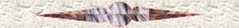
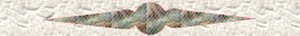

|
To
my Random Acts Of Kindness
The
6th June 2000 was one of the happiest days of my life. That was the day
I joined RAOK, and the warm welcomes I received made me feel so good.
We
all have some cross to bear, and we all cope in different ways. For me,
when I was feeling down and very alone I would come here and spend hours
reading members dedication pages to RAOK, and visiting their homepages.
I thought they sounded so friendly and caring, and I wanted to be part
of this family. But why would they want me as a member. I can't do anything.
I'm useless. Those were the thoughts that stopped me from joining sooner.
I could not have
RAOK
is not about what you can or can't do.
It's
about whether you want to give just 5 minutes of your time each day to
sign a guestbook or send a card to someone and put a smile on their face
and brighten their day. It's a small price to pay for the rewards you receive.
The feeling that you have actually done something nice for someone is reward
enough. Then you can add the loving friendships made, and for me learning
that I'm not as useless as I've often thought are rewards that can't be
bought.
It doesn't matter who you are or what you do, if you can spare 5 minutes of your time and want to experience the warmth and kindness that RAOK is all about then join today. I know you won't regret it. 
Thank you Gramma Mimi.
Thank you Kodesmom.
Thank you Flutterby  On the 9th June,2000 I adopted this teddy.I couldn't resist him. Don't you think he's just so cute? *S*
Please
sign my guestbook before you leave.
|